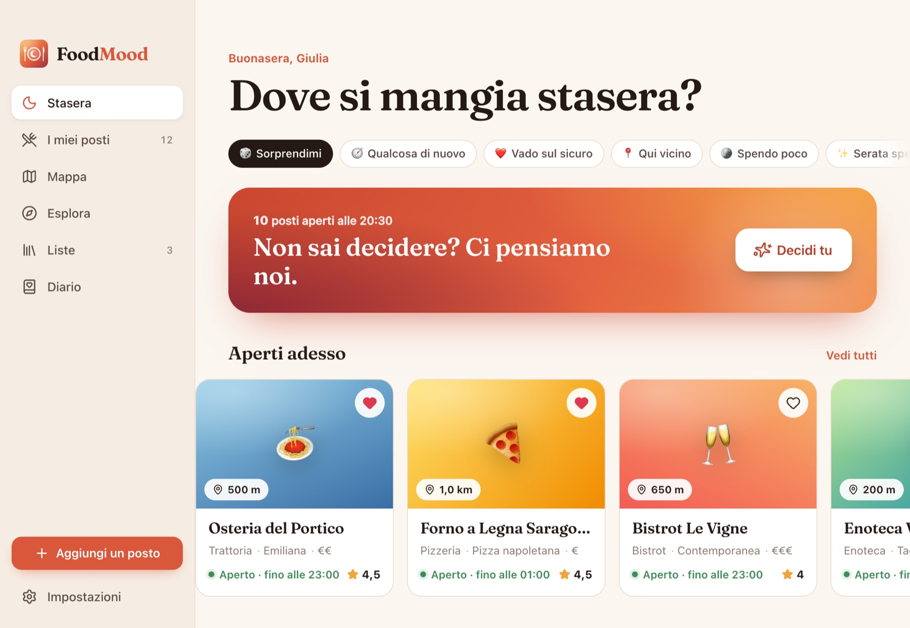
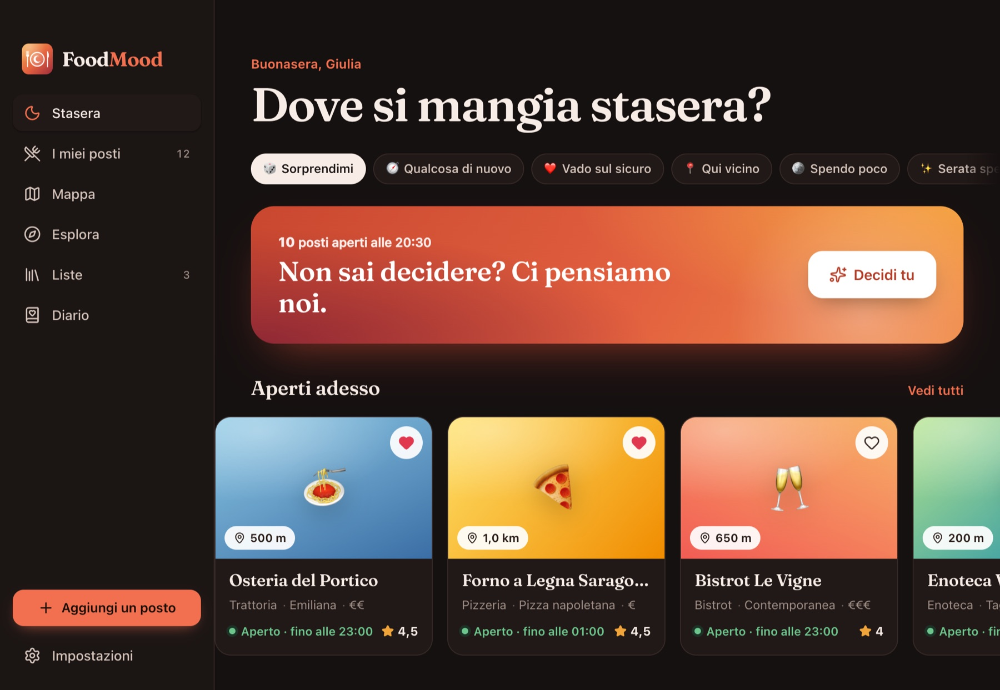

App per Mac · Gratis
FoodMood
Dove si mangia stasera?
I tuoi posti del cuore e quelli da provare. Quando siete indecisi li mescoli e li sfogliate uno alla volta: no, forse, sì, finché ne restano due o tre. E se l’altro è sul divano, vota dal suo telefono.
Stai visitando da un sistema diverso dal Mac: la versione per Windows è in arrivo.


Cosa fa
Pensato per l’uso di tutti i giorni.
Mescola e scarta
I tuoi posti, tutti o filtrati, uno alla volta. No li toglie, forse li tiene, sì li mette in cima. Giro dopo giro restano quelli che vi ispirano davvero.
Scegliete insieme
Mandi un link o mostri un codice QR: ognuno vota dal suo telefono. Quando un posto piace a tutti è un match, e chi vuole fa la scelta per tutti.
Si aggiunge in un attimo
Cerchi il nome e indirizzo, orari, telefono e sito arrivano da soli. Oppure esplori i locali intorno a te e li salvi con un clic.
Orari veri
Più fasce al giorno, chiusure dopo mezzanotte, orari incollati da Google Maps. Il giro lascia fuori chi è chiuso.
Su misura per chi c’è
Con tua moglie niente sushi, con i bambini niente di caro: le compagnie tolgono dal giro quello che non va. E l’app si ricorda quando ci siete stati l’ultima volta.
Niente account
I tuoi posti restano sul tuo dispositivo, con foto, mappa, liste da condividere, diario delle serate e backup in un file.
Dalla tastiera
Le mani restano sui tasti.
- ⌘GMescola i tuoi posti
- ← →Sfoglia avanti e indietro
- ↑ ↓Sì, no
- SpazioForse, vediamo il prossimo
- ⌘ZAnnulla l’ultima scelta
- ⌘NAggiungi un posto
Installazione
Un minuto, una volta sola.
Scarica e apri
Apri il file
.dmgscaricato e trascina FoodMood nella cartella Applicazioni.Primo avvio
Avvia l’app. macOS avvisa che non può verificarne lo sviluppatore: è normale per il software distribuito fuori dall’App Store senza certificato Apple. Chiudi l’avviso.
Apri comunque
Vai in Impostazioni di Sistema → Privacy e sicurezza, scorri in fondo e premi Apri comunque accanto a FoodMood. Da qui in poi si apre come qualsiasi altra app.